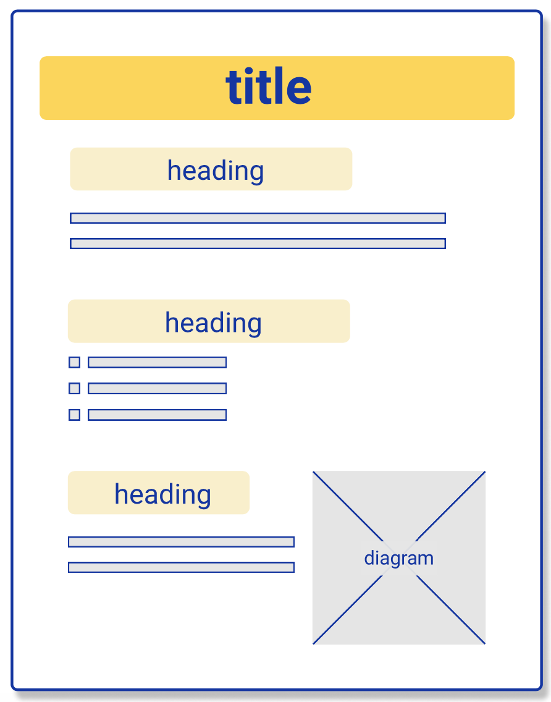

Designing Websites for Users with Aphasia
Information
- Keep sentences short and simple.
- Bullet points are helpful - e.g. for instructions.
- Replace unusual or technical words with everyday words.
Organisation
- Keep paragraphs short.
- Give paragraphs headings.

Audio and Visual Aids
- Use relevant photos, pictures and diagrams.
- Provide an audio version of the text.
Style
- Use small numbers of colours and fonts.
- Ensure colour contrast between text and background is clear.
- Use space - e.g. between lines and paragraphs.